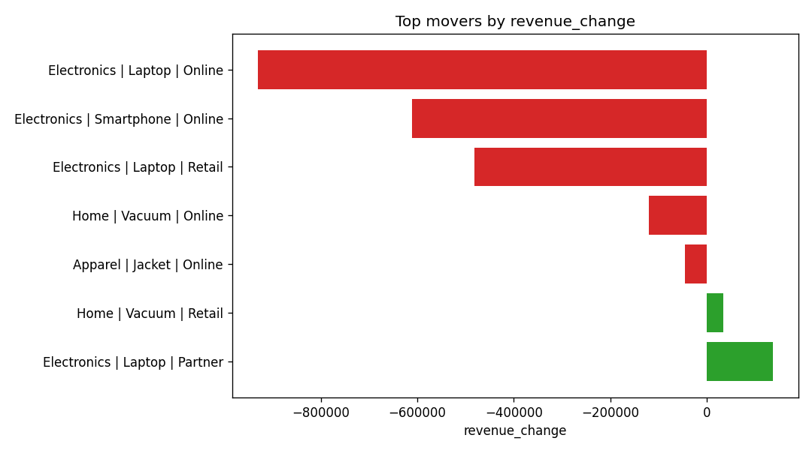

A multi-agent AI system that turns a plain-English business question into SQL, exploratory analysis, a trained model, a chart and an executive report — autonomously.
Decomposes the question & decides which steps are needed.
Writes & runs DuckDB SQL, self-correcting on errors.
Trends, group comparisons & anomaly detection.
Baseline model + feature-importance drivers (when needed).
Charts of the key movers.
Executive report with actions & caveats.
Question: “Why did sales drop in Maharashtra last quarter?”

Answer. Maharashtra sales fell ₹2.51M (−52.4%) last quarter, driven by a collapse in Electronics — Online Laptop & Smartphone sales fell to zero and Retail Laptop dropped 91%. Partner-channel Laptop sales grew 82% but could not offset the losses.
Likely cause. A failure in the online & retail channels for key Electronics products (stockout / platform outage / halted sales).
Recommended actions. Investigate the online/retail channel failure; replicate the partner-channel success; review Electronics strategy; implement corrective measures.
This is a Python app, so it runs on Streamlit (not on static hosting). Clone the repo and launch:
git clone https://github.com/sumankr0087/autonomous-data-scientist cd autonomous-data-scientist pip install -r requirements.txt # add your free Google AI Studio key to .env (GOOGLE_API_KEY=...) python main.py seed streamlit run app.py